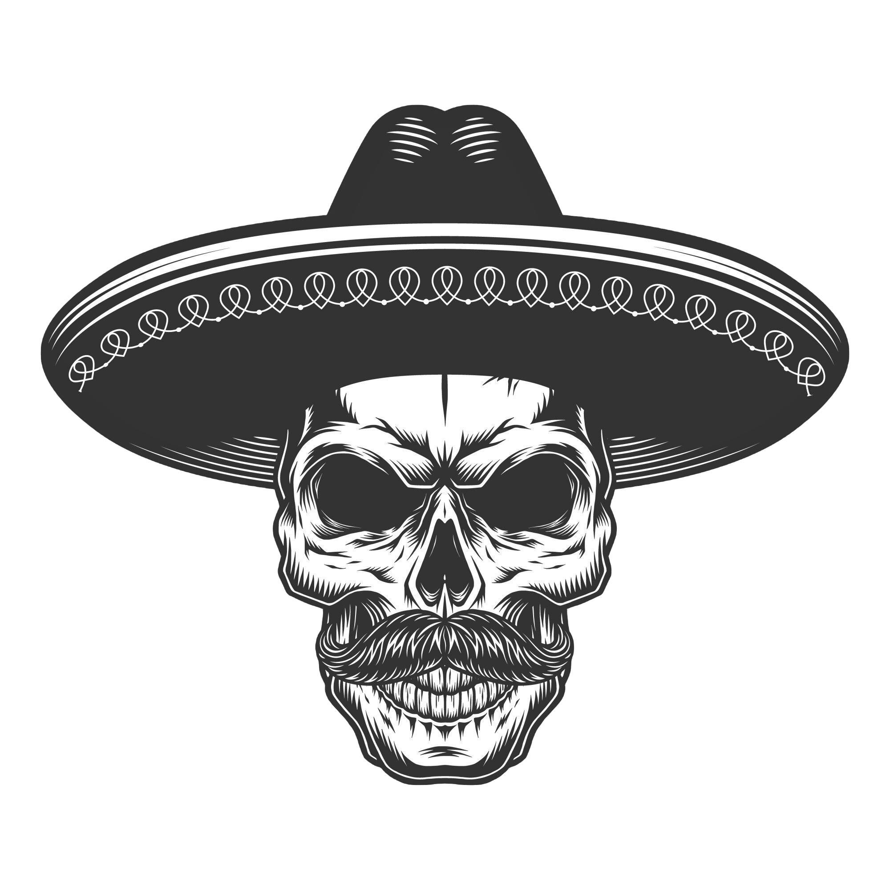

Lomos:

-
Lomo completo: Pan de papa, bife de lomo, huevo, queso, jamón, lechuga, tomate, mayo de la casa y fritas.
Lomo Cabron: Pan de papa, bife de lomo, huevo, queso, jamón, mnayo de la casa, mayo cabrona picante, pico de gallo y fritas.
Vegetariano: Pan de papa, berenjenas asadas, huevo, queso, verduras asadas, mayo de la casa, mayo de palta y fritas.
Pinche Lomo: Pan de papa, bife de lomo, huevo, queso tybo, jamón, queso cheddar, bacon, aros de cebolla fritas, mayo de la casa, salsa barbacoa y fritas.
Burgers:

-
Burger completa: Pan de papa, doble medallón de carne, cheddar, lechuga, tomate, cebolla morada, mayo de la casa y fritas.
Burger Cabron: Pan de papa, doble medallón de carne, cheddar, bacon, mayo de la casa, mayo cabrona picante, pico de gallo y fritas.
Vegetariana: Pan de papa, medallón vegetariano, huevo, verduras asadas, mayo de la casa, mayo de palta y fritas.
Pinche: Pan de papa, doble medallón de carne, huevo, cheddar, bacon, aros de cebolla fritos, mayo de la casa, salsa bbq y fritas.
Nahual: Pan de papa, doble medallón de carne, cheddar, bacon, cebollas caramelizadas, mayo de la casa, salsa bbq y fritas.
Pesadilla: Pan de papa, triple medallón de carne, huevo, triple cheddar, bacon, mayo de la casa, salsa bbq y fritas.
Doble cuarto: Pan de papa, doble medallón de carne, cheddar, bacon, mostaza, ketchup, cebolla bruonise y fritas.
Big Cabrona: Pan de papa, doble medallón de carne, cheddar, pepinillos, lechuga, cebolla bruonise, mayo de la casa, salsa big cabrona y fritas.
Papas:

-
Simples: Solo papas.
Cabronas: Con salsa de la casa, salsa cabrona picante y pico de gallo.
Con huevo: Papas con huevo.
Cheddar y bacon: Papas con cheddar y bacon.
Nacho libre: Huevo, queso roquefort y jamón tostado.